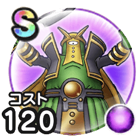

タイムマスター
2.5周年記念ウォークフェスピオリムボミオスこころ最大コスト+4じゅもんダメージ+3%ヒャド属性じゅもんダメージ+10%デイン属性じゅもんダメージ+5%メラ属性耐性+7% / 8.5点
くわしい特徴
【ランク特殊効果】 ピオリムボミオスこころ最大コスト+4じゅもんダメージ+3%ヒャド属性じゅもんダメージ+10%デイン属性じゅもんダメージ+5%メラ属性耐性+7%

2.5周年記念ウォークフェスピオリムボミオスこころ最大コスト+4じゅもんダメージ+3%ヒャド属性じゅもんダメージ+10%デイン属性じゅもんダメージ+5%メラ属性耐性+7% / 8.5点
【ランク特殊効果】 ピオリムボミオスこころ最大コスト+4じゅもんダメージ+3%ヒャド属性じゅもんダメージ+10%デイン属性じゅもんダメージ+5%メラ属性耐性+7%